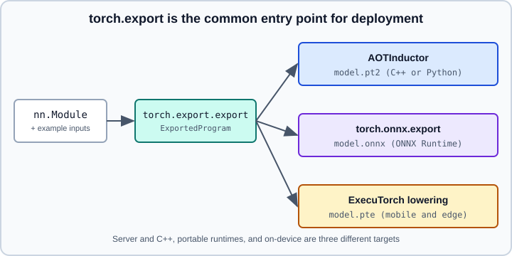

torch.export
|
This content was generated with the assistance of AI and should be verified against the official documentation before being relied on in production. |
torch.export captures a PyTorch model as a single, self-contained graph ahead of time, without running it in production. The result, an ExportedProgram, is a normalised representation that keeps the calling convention of the original module, contains no Python, and can be saved to disk. It is the common entry point of the deployment paths in this part: AOTInductor, the ONNX exporter and ExecuTorch all start from an exported program, and the graph frontend of pipeline parallelism (DTensor, Tensor & Pipeline Parallelism) uses it too.
Examples were run on Python 3.13 with PyTorch 2.15 (CPU) on 2026-10-31. The general question of which format to ship is discussed in ONNX & Model Interoperability and Deploying & Serving ML Models.

export versus torch.compile
Both use the same graph-capture machinery, but they make opposite trade-offs (see torch.compile):
torch.compile |
torch.export.export |
|
|---|---|---|
Goal |
Speed up code that keeps running in Python |
Produce a standalone artefact to run elsewhere |
Untraceable code |
Falls back to Python (a graph break) |
Raises an error; you must rewrite the code |
Shapes |
Recompiles for new shapes, can mark dims dynamic |
Static unless you declare dimensions dynamic |
Output |
Optimised callable in the same process |
|
The documentation calls this the full-graph requirement: export either captures the whole forward pass or fails, which is also what makes the result sound enough to hand to a different runtime.
A first export
import torch
from torch import nn
class SmallNet(nn.Module):
def __init__(self) -> None:
super().__init__()
self.conv = nn.Conv2d(3, 8, kernel_size=3, padding=1)
self.bn = nn.BatchNorm2d(8)
self.head = nn.Linear(8, 10)
def forward(self, x: torch.Tensor) -> torch.Tensor:
x = torch.relu(self.bn(self.conv(x)))
x = x.mean(dim=(2, 3))
return self.head(x)
model = SmallNet().eval() # export in eval mode unless you export for training
example = (torch.randn(4, 3, 32, 32),)
ep = torch.export.export(model, example)
print(ep) # graph, signature and range constraints
y = ep.module()(*example) # run the program like a normal module
torch.testing.assert_close(y, model(*example))torch.export.export(mod, args, kwargs=None, *, dynamic_shapes=None, strict=...) returns an ExportedProgram. Things to know about the result:
-
Sound. The program keeps the original input and output structure (including keyword arguments), so a caller can use it in place of the module.
-
Normalised. Submodules are inlined into one flat graph. Parameters and buffers are lifted to graph inputs, so there are no attribute accesses; the
graph_signature(anExportGraphSignature) records which inputs are parameters, buffers, user inputs, and mutated state. -
Metadata-rich. Nodes carry stack traces that point back to the user code, which is what makes export errors readable.
-
ep.module()gives a callablenn.Module-like object for testing,ep.graph_modulethe raw graph, andep.range_constraintsthe ranges of symbolic dimensions. -
Always compare
ep.module()(inputs)with the eager model on representative inputs; export proves the graph can be captured, not that it matches numerically in every corner case.
Dynamic shapes
By default every input shape is specialised: the program is valid only for the shapes of the example inputs, and a call with another shape fails at run time even though the eager module would accept it. Declare which dimensions may vary with dynamic_shapes, a structure that mirrors the inputs:
from torch.export import Dim
batch = Dim("batch", min=1, max=1024)
ep = torch.export.export(
model,
example,
dynamic_shapes={"x": {0: batch}}, # keys are forward() parameter names; 0 = first dimension
)
ep.module()(torch.randn(64, 3, 32, 32)) # now works for any batch in [1, 1024]Ways to declare a dimension:
-
Dim("name", min=..., max=...): a named symbol. Dimensions that share the name share the symbol, and linear relations such as2 * batchare allowed. If tracing finds that the code forces a different relation or a fixed value, aConstraintViolationErrorexplains how to fix the declaration. -
Dim.DYNAMIC: export infers the range and relations;minandmaxare hints, and an error is raised only if the dimension turns out to be static. -
Dim.AUTO: likeDim.DYNAMIC, but a dimension that turns out to be static is silently specialised instead of raising an error. This suits a best-effort first attempt. -
ShapesCollection: attaches dynamic dimensions to tensors instead of mirroring the nested input structure indynamic_shapes, which is convenient for deeply nested inputs. -
AdditionalInputs: given several representative input sets, infers which dimensions vary between them.
Pitfalls: guards on shapes (for example if x.shape[0] > 2) specialise or constrain the dimension; an upper bound that is much larger than needed costs memory in runtimes that plan memory from the bound (this matters on-device, see ExecuTorch); and a dimension of size 0 or 1 in the example input may be specialised by the tracer, so use example sizes of at least 2 for dimensions you want dynamic.
IR levels and decompositions
The program returned by export contains high-level ATen operators and may still contain mutations. The documentation distinguishes three IR levels:
| IR | How to obtain | Properties |
|---|---|---|
Training IR |
|
May contain mutations and in-place ops; autograd-compatible; about 3000 operators |
Inference IR |
|
Purely functional; about 2000 operators |
Core ATen IR |
|
Purely functional and heavily decomposed; about 180 operators |
inference_ep = ep.run_decompositions(decomp_table={}) # functionalise only
core_ep = ep.run_decompositions() # decompose to Core ATen
table = torch.export.default_decompositions() # start from the default table...
# table[torch.ops.aten.<op>.default] = my_decomposition # ...and override single operators
custom_ep = ep.run_decompositions(table)Backends choose the level they need: a backend that supports many operators wants the inference IR; a small runtime that implements only the Core ATen set wants the fully decomposed form. run_decompositions returns a new program; the original is unchanged.
Strict and non-strict export
The strict argument chooses the tracer. The documentation describes strict=True as using TorchDynamo bytecode tracing, which still has unsupported Python features, and strict=False as the non-strict workaround. The ONNX exporter tries both: it uses an existing ExportedProgram as is, then strict=False, then strict=True. If a model fails in one mode, try the other and read the error: it points to the line of user code that could not be traced.
What cannot be exported
-
Data-dependent control flow. A Python
ifon tensor values, or on a shape that is not specialised, cannot be captured. Rewrite with the higher-order operators:torch.condfor branches, andtorch.scan,torch.mapand related operators for loops where available (their documentation is under the higher-order operators section; check the installed version). A dynamic number of loop iterations is not supported; keep the loop in the application and export its body. -
Operators without a fake (meta) kernel. Tracing needs a shape-propagation kernel for every operator; custom operators must register one (see Custom Operators, C++/CUDA Extensions & Triton).
-
Mutation of module state. Allowed but fragile; prefer functional code, and note that backends may not support buffer mutation.
-
Python side effects such as printing, logging or global counters are not part of the graph.
Two tools reduce the trial and error. torch.export.draft_export exports in a more permissive mode, records the places where it had to make assumptions or work around problems (for example missing fake kernels or data-dependent guards) and produces a report; it is meant for diagnosing, not for producing the final artefact. ExportDB is a catalogue of supported and unsupported code patterns, each with the rewrite that works.
report_ep = torch.export.draft_export(model, example) # also prints a report of issues foundThe exact printout of draft_export and the name of the report attribute differ between releases; read the page above for the version you use.
Saving and loading
An ExportedProgram is serialised to a .pt2 file, a zip archive whose layout is specified by the PT2 Archive Spec:
torch.export.save(ep, "small_net.pt2")
loaded = torch.export.load("small_net.pt2")
out = loaded.module()(*example)The same container format is used for the compiled artefacts of AOTInductor (specified in the PT2 Archive Spec listed in the references). Loading a program requires a compatible PyTorch version, since the operator set evolves. Pin the version that produced the file, exactly as for any other deployment dependency (see Deploying & Serving ML Models). The old TorchScript formats (torch.jit.save) are not an alternative to plan around: TorchScript is deprecated, see Legacy APIs & Migration.
Exporting for training
By default the exported graph is a training IR that supports autograd, so an exported module can be fine-tuned. Remember the usual rules: call model.train() or model.eval() before export to fix the behaviour of dropout and batch normalisation, because the mode is baked into the graph. Do not export in training mode when you intend to deploy for inference.